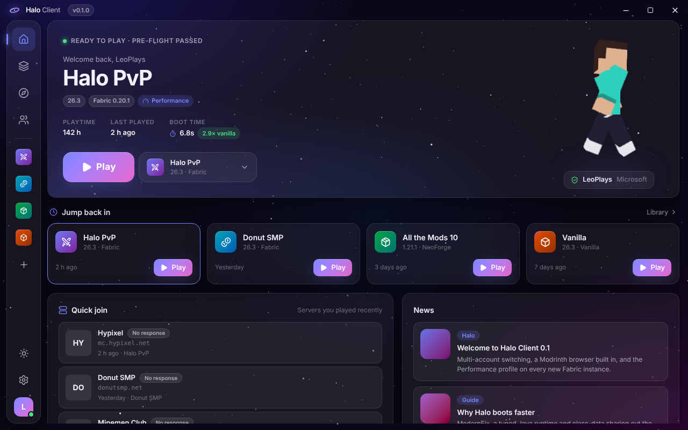

Halo Client
The fast, clean Minecraft launcher. All your accounts, every mod loader, Modrinth built in, and a launch path tuned to get you in-game sooner.
Download for Windows
Boots faster
Tuned Java, class-data sharing and a Performance profile (Sodium, Lithium, ModernFix and more). Every launch is timed so you can see it.
All your accounts
Sign in with Microsoft and switch alts in one click. No Halo account, ever.
Mods in one click
Browse Modrinth inside the launcher. Dependencies install themselves. Fabric, Quilt, Forge and NeoForge.
Quick join
Jump back into the servers you played, with live player counts and server icons.
Halo HUD
FPS, CPS, keystrokes, armor, potion timers and zoom, in a lightweight companion mod.
Fixes crashes for you
Spots the usual causes (wrong Java, a missing mod, low memory) and fixes them with one click.
1Download
Grab the installer above. It's small and installs just for you, no admin needed.
2Run it
If Windows shows "Windows protected your PC", click More info → Run anyway. That appears for new apps that aren't code-signed yet.
3Play
Add your account, make an instance, hit Play.
Halo downloads Minecraft from Mojang's official servers and checks every file. You need your own copy of Minecraft: Java Edition to play online.